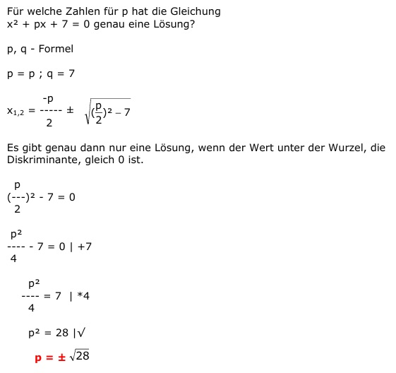

Quadratische Gleichungen Aufgabe 76 Für welche Zahlen für p hat die Gleichung x² + px + 7 = 0 genau eine Lösung? p, q - Formel p = p ; q = 7  Es gibt genau dann nur eine Lösung, wenn der Wert unter der Wurzel, die Diskriminante, gleich 0 ist. p (---)² - 7 = 0 2 p² ---- - 7 = 0 |+7 4 p² ---- = 7 |*4 4 p² = 28 |√ p = ±